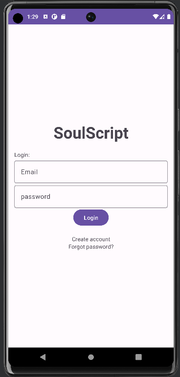
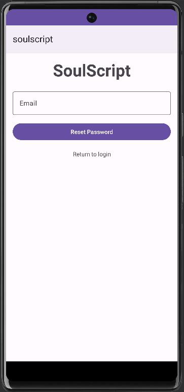
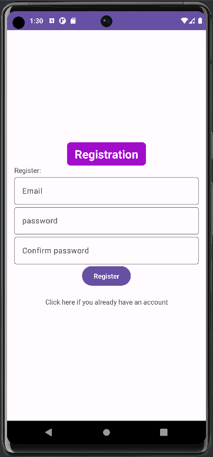

App Overview
The app takes in user problem description and makes API call to open ai chatgpt API using okhttp3 to get a bible verse with a relevant explanation.
Login Page
- To log in, enter your registered email and password into the login form.
- If you're testing the app, you can use the following test account details:
- Username: eee@eee.com
- Password: eeeeee
- If you've forgotten your password, click the "forgot password" text on the login form to open the forgot password page. From there, you can reset your password.
- If you don't have an account, click the "Create Account" text on the login form to go to the registration page and create a new account.
Forgot Password Page
- To reset your password, follow these steps:
- Enter your email address in the provided input field. The email address will be checked to ensure it is valid.
- Click the "Reset Password" button to send a password reset email to your email address.
- Open your email account and locate the password reset email from us. If you can't find the email in your inbox, check your spam or junk folder.
- Follow the instructions in the email to reset your password. You will be prompted to enter a new password for your account.
Registration Page
- To create an account, follow these steps:
- Enter a valid email address and a matching password into the provided input fields. The password must be at least 8 characters long and contain a mixture of uppercase and lowercase letters, numbers, and special characters.
- Click the "Create Account" button to create your account. If the email and password inputs are not valid, a message will be displayed to prompt you to enter valid inputs.
- If you already have an account, click the "Already have an account" text on the registration page to return to the login page.
Home Page

- After logging in, the app will open to the home page.
- Click the gear icon in the top right corner to open the settings menu.
- To find a Bible verse related to a particular problem, enter a problem description into the search field and click the "Search" button. The results page will display a relevant Bible verse and an explanation for the verse based on the problem description.
- You must have an internet connection to search for verses.
- To receive a recommendation based on your bookmarked verses, click the "Get Recommendation" button. The app will suggest a verse with similar themes to your bookmarked verses.
- Click the bookmarks icon in the top right corner to open the bookmarks page, where you can view and manage your bookmarked verses.
Results Page

- The results page is opened when you search for a verse to help with your problem, click the recommend button, or click on a bookmarked verse from the bookmarks page.
- The top textview displays the Bible verse that was returned by the API, while the bottom textview displays an explanation of the verse.
- You can click the share icon to share the verse and explanation with someone who needs it via supporting apps.
Settings Page

- On the settings page, you can choose to receive daily notifications by checking the appropriate checkbox. Your preference will be saved and you will receive a daily notification with a Bible verse and explanation based on your preferences.
- You can also change your password or sign out of the app from the settings page.
Bookmarks Page

- The bookmarks page displays a list of all the Bible verses that you have bookmarked. When you click on a verse, it will open the results page with the verse and explanation.
- If you open the app without an internet connection, the bookmarks will be populated from the local database and you will still be able to view your saved verses.
- You can delete a bookmark by clicking the delete button next to the corresponding verse on the bookmarks page.
Troubleshooting
- This app uses the ChatGPT API, which may be slow. Please be patient and wait for the app to return a response.
- If you encounter a timeout error while searching for a Bible verse, please try the search again at a later time.
- If the Search and Recommend button are disabled, check your internet connection. The button is automatically disabled when you have no signal.
- If you have any other support inquiries, please contact O.Okude-20@student.lboro.ac.uk.